두루 읽고 공부한 뒤에
아이에게 맞는 교재를 고릅니다
시중 교재와 문제집부터 수능, 모의고사까지 직접 읽고 공부했습니다. 그 위에서 아이마다 필요한 자료를 고르고 수업을 짭니다.
한국 영어 교육에서 쓰는 자료를
대부분 읽고 공부했습니다
시중 문제집과 교재, 수능, 모의고사, 학력평가, 진단평가까지 살펴봅니다. 그렇게 쌓은 기준으로 자료를 분석하고, 아이에게 맞는 접근법을 찾습니다.
아이의 수준과 필요에 맞춰
교재를 골라 씁니다
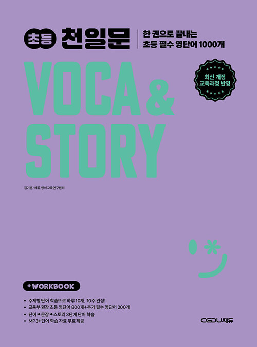
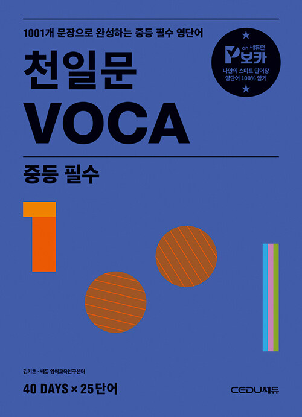
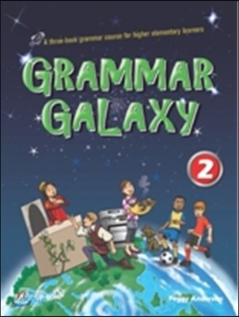
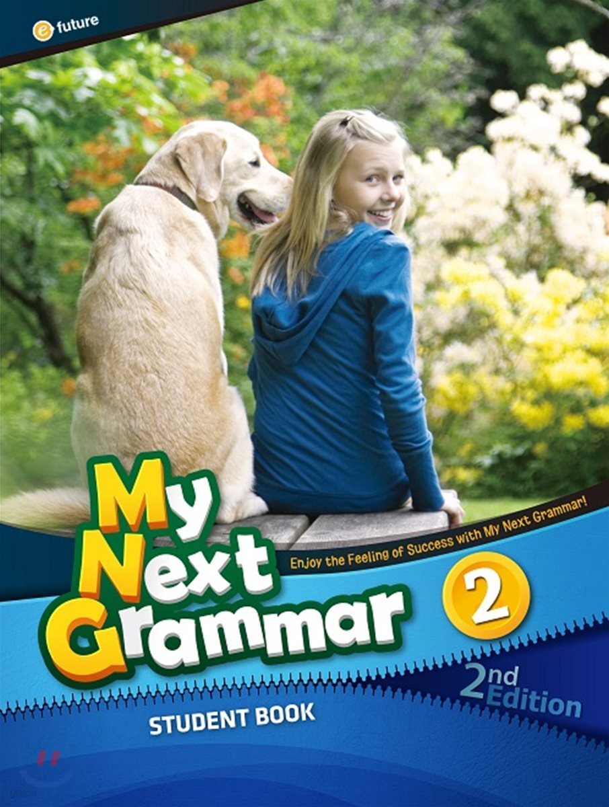
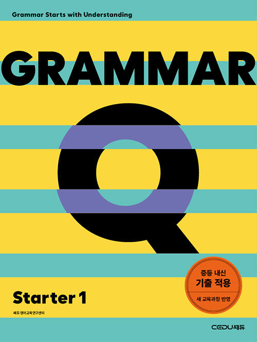
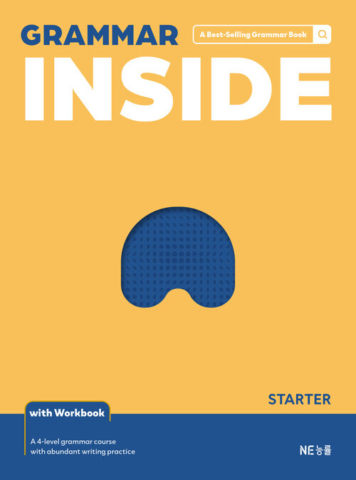
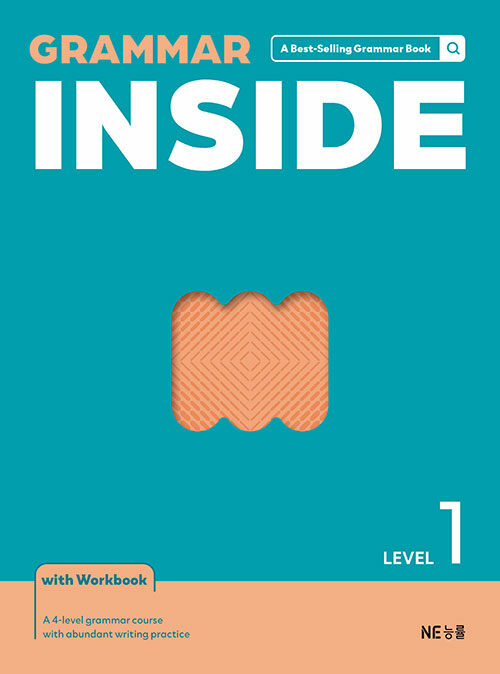
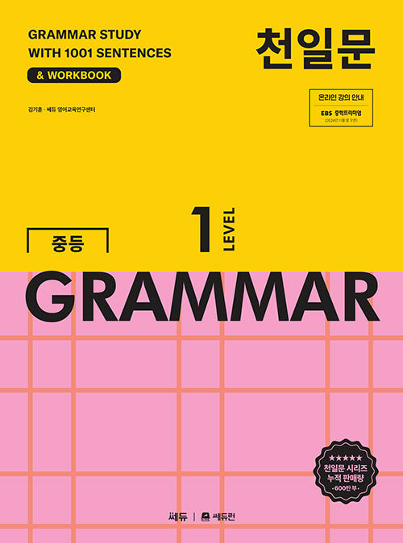
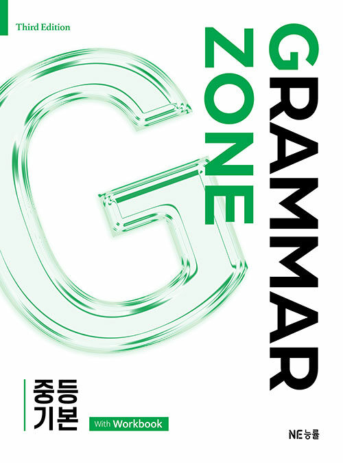
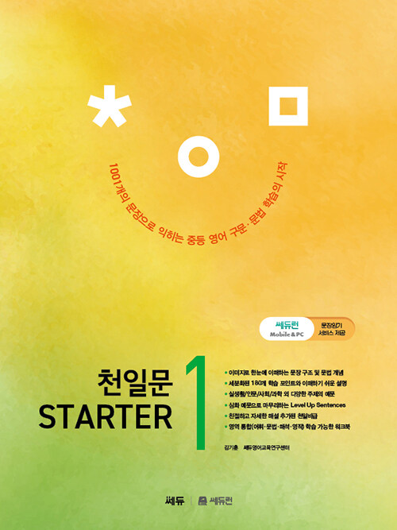
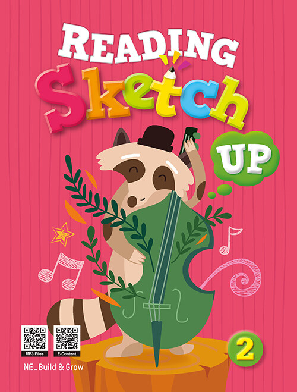
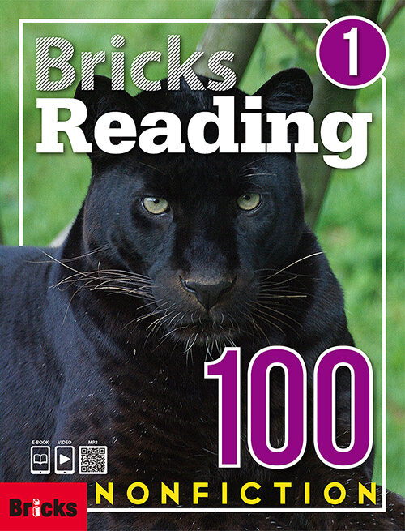
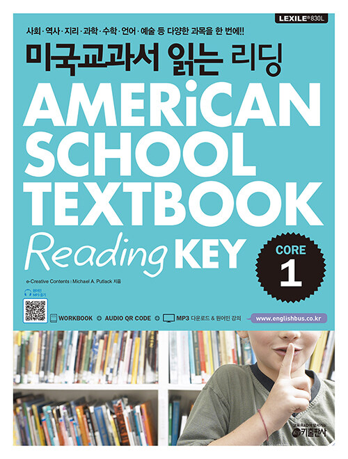
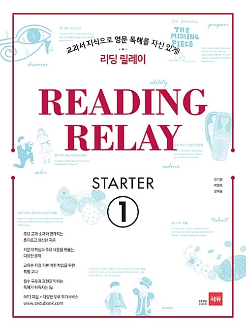
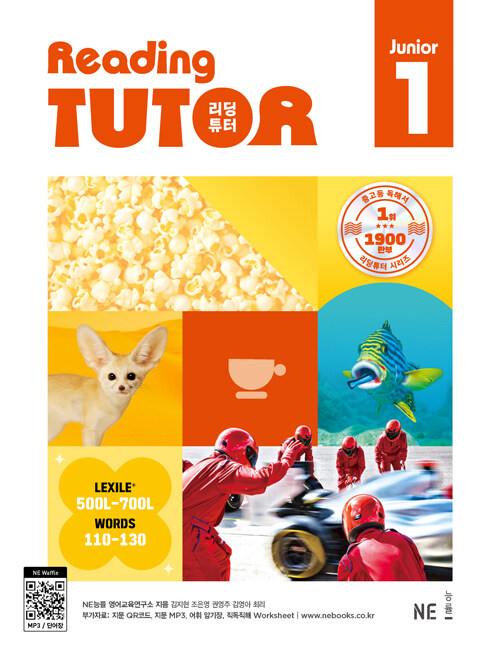
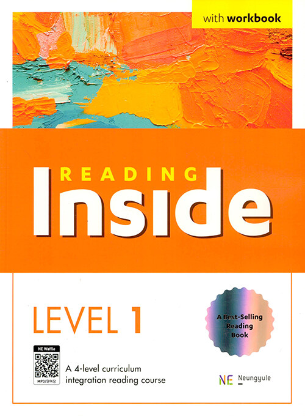
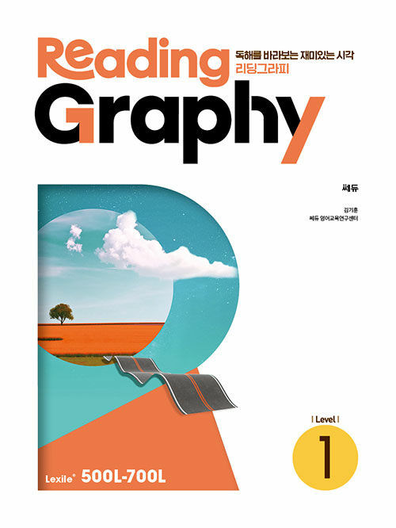
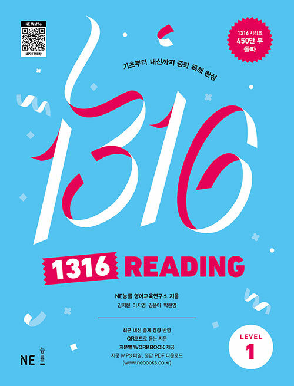
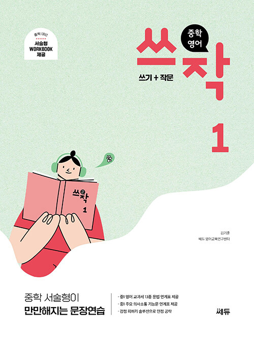
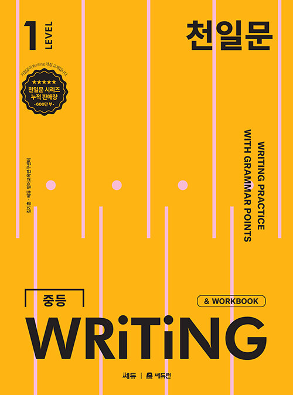
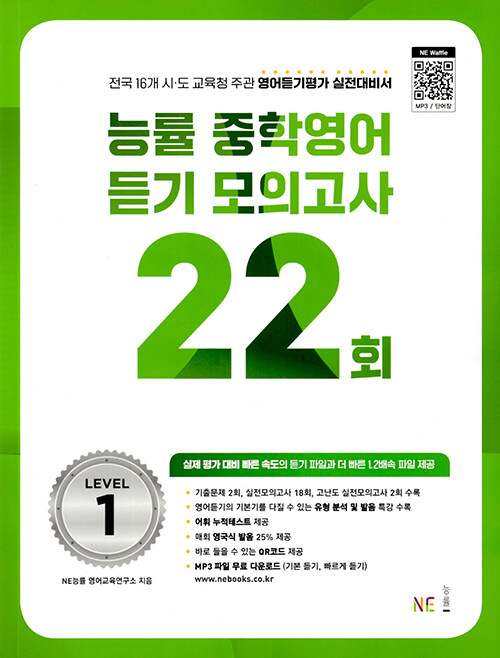
표지는 각 출판사의 저작물입니다.
깨달음의 즐거움,
배우는 기쁨이 있는 수업
AI를 활용하면서 시험은 날로 고차원적으로 발전하고 있습니다. 직결영어는 넓고 깊은 어휘와 구문 학습으로 여기에 대비합니다.
기출 분석과 동형 모의고사
기출문제를 분석하고, 같은 유형의 문제로 모의고사를 봅니다.
집요한 어휘 학습과 추론
어휘를 집요하게 익히고, 맥락으로 뜻을 추론하는 연습을 합니다.
풍부한 인풋과 구문 정독
풍부한 인풋을 바탕으로 구문을 정독합니다. 그 과정에서 아하 모먼트를 끌어냅니다.
프로그램은 적극 활용하되,
수업의 중심에 두지는 않습니다
아이가 여러 방법으로 꾸준히 공부할 수 있도록 다방면으로 돕는 데 씁니다.
리딩앤
영어 원서를 온라인으로 읽는 프로그램입니다.
리딩게이트
원서를 읽고 퀴즈로 확인하는 온라인 영어 도서관입니다.
클래스5
교재 단원 학습과 팝송 학습에 쓰는 프로그램입니다.
아마존 오더블
원서를 귀로 듣는 오디오북 서비스입니다.
수업에서 함께 읽는 원서는 원서 서가에 모아 두었습니다.
원서 서가 보기→상담은 상담 신청서로 시작합니다
신청서를 보내 주시면 아이의 지금 영어와 학습 이력을 먼저 살펴보고 연락드립니다.